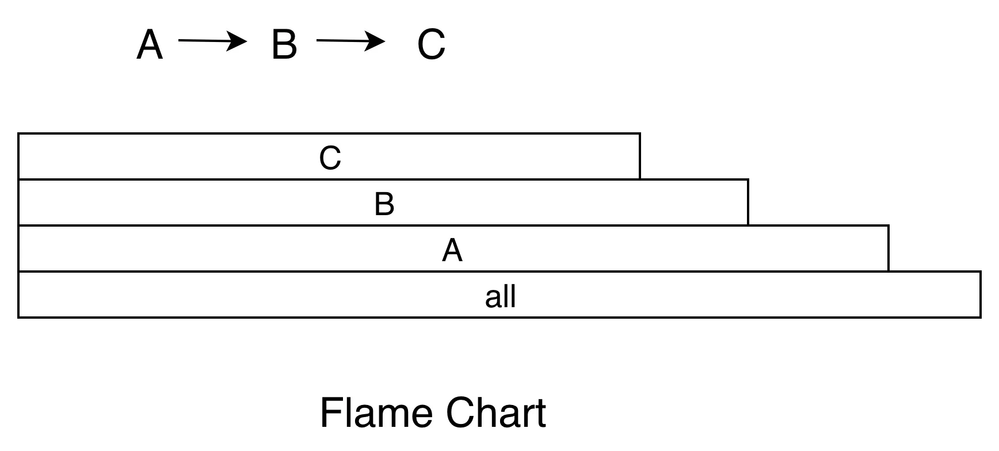

Android 卡顿优化总结¶
1. 卡顿定义¶
稳定帧率输出的画面出现一帧或者多帧没有绘制 。
比如下图中，App 主线程有在正常绘制的时候（通常是做动画或者列表滑动），有一帧没有绘制，那么我们认为这一帧有可能会导致卡顿（这里说的是有可能，由于 Triple Buffer 的存在，这里也有可能不掉帧）

1. 1 系统上帧运行机制¶
以用户手指上下滑动应用界面的操作场景为例，整个流程大致如下：
- 用户手指触摸屏幕后，屏幕驱动产生
Input触控事件；框架system_server进程中的EventHub通过epoll机制监听到驱动产生的Input触控事件上报，由InputReader读取到Input事件后，唤醒InputDispatcher找到当前触控焦点应用窗口，并通过事先建立的socket通道发送Input事件到对应的应用进程； - 应用进程收到
Input触控事件后UI线程被唤醒进行事件的分发，相关View控件中根据多个ACTION_MOVE类型的Input事件判断为用户手指滑动行为后，通过Choreographer向系统注册申请app类型的Vsync信号，并等待Vsync信号到来后触发绘制操作； app类型的Vsync信号到来后，唤醒应用UI线程并向其消息队列中放入一个待执行的绘制任务，在UI线程中先后遍历执行View控件树的测量、布局和绘制（硬件加速默认开启的状态下会遍历并记录每个View的draw操作生成对应的绘制命令树）操作；View控件树的绘制任务执行完成后会唤醒应用的RenderThread渲染线程执行界面渲染任务；整个渲染任务中会先同步UI线程中构建好的绘制命令树，然后通过dequeueBuffer申请一张处于free状态的可用Buffer，然后调用SkiaOpenGLPipeline渲染管道中使用GPU进行渲染操作，渲染完成后swapBuffer触发queueBuffer动作进行上帧；- 应用渲染线程最后的
queueBuffer上帧动作，会唤醒对端SurfaceFlinger进程中的Binder处理线程，其中将对应用BufferQuque中的Buffer标记为Queued状态，然后注册申请sf类型的Vsync信号； - 待
sf类型的Vsync信号到来后会唤醒SurfaceFlinger的主线程执行一帧的合成任务，其中会先通过handlePageFlip操作遍历所有的应用Layer找到有上帧操作的处于Queued状态的Buffer进行AcquireBuffer获取标记锁定，然后执行persent动作调用唤醒HWC service进程的工作线程执行具体的图层的合成送显操作； HWC service中最终会收到SurfaceFlinger的请求后，进行图层合成操作，最终通过调用libDrm库相关接口Commit提交Buffer数据到Kernel内核中的屏幕驱动，并最终送到屏幕硬件上显示。
上述过程用一张图描述如下：

我们可以从三个方面定义卡顿：
- 从现象上来说，在
App连续的动画播放或者手指滑动列表时（关键是连续），如果连续2帧或者2帧以上，应用的画面都没有变化，那么我们认为这里发生了卡顿； - 从
SurfaceFlinger的角度来说，在App连续的动画播放或者手指滑动列表时（关键是连续），如果有一个Vsync到来的时候 ，App没有可以用来合成的Buffer，那么这个Vsync周期SurfaceFlinger就不会走合成的逻辑（或者是去合成其他的Layer），那么这一帧就会显示App的上一帧的画面，我们认为这里发生了卡顿； - 从
App的角度来看，如果渲染线程在一个Vsync周期内没有queueBuffer到SurfaceFlinger中App对应的BufferQueue中，那么我们认为这里发生了卡顿。
关于卡顿的详细原理分析可以查看原理篇
1.2 卡顿与ANR的关系¶
产生卡顿的根本原因是UI线程不能够及时的进行渲染，导致UI的反馈不能按照用户的预期，连续、一致的呈现。产生卡顿的原因多种多样，很难一一列举，而ANR是Google人为规定的概念，产生ANR的原因最多也只有四个。分别是：
- Service Timeout:比如前台服务在20s内未执行完成，后台服务Timeout时间是前台服务的10倍，200s；
- BroadcastQueue Timeout：比如前台广播在10s内未执行完成，后台60s
- ContentProvider Timeout：内容提供者,在publish过超时10s;
- InputDispatching Timeout: 输入事件分发超时5s，包括按键和触摸事件。
而市面上的一些卡顿监控工具，经常被拿来监控ANR（卡顿阈值设置为5秒），这其实很不严谨：首先，5秒只是发生ANR的其中一种原因（Touch事件5秒未被及时消费）的阈值，而其他原因发生ANR的阈值并不是5秒；另外，就算是主线程卡顿了5秒，如果用户没有输入任何的Touch事件，同样是不会发生ANR的，更何况还有后台ANR等情况。
2. 卡顿分析¶
造成卡顿的原因可能有千百种，不过最终都会反映到 CPU 时间 上。我们可以把 CPU 时间分为两种：用户时间和系统时间。用户时间就是执行用户态应用程序代码所消耗的时间；系统时间就是执行内核态系统调用所消耗的时间，包括 I/O、锁、中断以及其他系统调用的时间。
评价一个 CPU 的性能，需要看主频、核心数、缓存等参数，具体表现出来的是计算能力和指令执行能力，也就是每秒执行的浮点计算数和每秒执行的指令数。
我们可以通过下面的方法获得设备的 CPU 信息。
// 获取 CPU 核心数
cat /sys/devices/system/cpu/possible
// 获取某个 CPU 的频率
cat /sys/devices/system/cpu/cpu0/cpufreq/cpuinfo_max_freq
2.1 CPU使用率¶
我们可以通过/proc/stat得到整个系统的 CPU 使用情况，通过/proc/[pid]/stat可以得到某个进程的 CPU 使用情况。
关于 stat 文件各个属性的含义和 CPU 使用率的计算，可以阅读 《Linux 环境下进程的 CPU 占用率》和Linux 文档。其中比较重要的字段有：
proc/self/stat:
utime: 用户时间，反应用户代码执行的耗时
stime: 系统时间，反应系统调用执行的耗时
majorFaults：需要硬盘拷贝的缺页次数
minorFaults：无需硬盘拷贝的缺页次数
如果 CPU 使用率长期大于 60% ，表示系统处于繁忙状态，就需要进一步分析用户时间和系统时间的比例。对于普通应用程序，系统时间不会长期高于 30%，如果超过这个值，我们就应该进一步检查是 I/O 过多，还是其他的系统调用问题。
Android 是站在 Linux 巨人的肩膀上，虽然做了不少修改也砍掉了一些工具，但还是保留了很多有用的工具可以协助我们更容易地排查问题，这里我给你介绍几个常用的命令。例如，top 命令可以帮助我们查看哪个进程是 CPU 的消耗大户；vmstat 命令 可以实时动态监视操作系统的虚拟内存和 CPU 活动；strace 命令 可以跟踪某个进程中所有的系统调用。
2.2 CPU 饱和度¶
CPU 饱和度反映的是线程排队等待 CPU 的情况，也就是 CPU 的 负载情况。
CPU 饱和度首先会跟应用的 线程数 有关，如果启动的线程过多，容易导致系统不断地切换执行的线程，把大量的时间浪费在上下文切换，我们知道每一次 CPU 上下文切换都需要刷新寄存器和计数器，至少需要几十纳秒的时间。
我们可以通过使用vmstat命令或者/proc/[pid]/schedstat文件来查看 CPU 上下文切换次数，这里特别需要注意 nr_involuntary_switches 被动切换的次数。
proc/self/sched:
nr_voluntary_switches：
主动上下文切换次数，因为线程无法获取所需资源导致上下文切换，最普遍的是IO。
nr_involuntary_switches：
被动上下文切换次数，线程被系统强制调度导致上下文切换，例如大量线程在抢占CPU。
se.statistics.iowait_count：IO 等待的次数
se.statistics.iowait_sum： IO 等待的时间
此外也可以通过 uptime 命令可以检查 CPU 在 1 分钟、5 分钟和 15 分钟内的平均负载。比如一个 4 核的 CPU，如果当前平均负载是 8，这意味着每个 CPU 上有一个线程在运行，还有一个线程在等待。一般平均负载建议控制在 0.7 × 核数 以内。
另外一个会影响 CPU 饱和度的是 线程优先级，线程优先级会影响 Android 系统的调度策略，它主要由 nice 和 cgroup 类型共同决定。nice 值越低，抢占 CPU 时间片的能力越强。
当 CPU 空闲时，线程的优先级对执行效率的影响并不会特别明显，但在 CPU 繁忙的时候，线程调度会对执行效率有非常大的影响。
关于线程优先级，你需要注意 是否存在高优先级的线程空等低优先级线程，例如主线程等待某个后台线程的锁。从应用程序的角度来看，无论是用户时间、系统时间，还是等待 CPU 的调度，都是程序运行花费的时间。
2.3 排查工具¶
systrace¶
systrace是 Android 4.1 新增的性能分析工具。通常使用 systrace 跟踪系统的 I/O 操作、 CPU 负载、 Surface 渲染、 GC 等事 件。systrace利用了 Linux 的ftrace调试工具，相当于在系统各个关键位置都添加了一些性能探针，也就是在代码里加了一些性能监控的埋点。
Android 在 ftrace 的基础上封装了atrace，并增加了更多特有的探针，例如 Graphics、Activity Manager、Dalvik VM、System Server等。systrace 工具只能监控特定系统调用的耗时情况，所以它是属于 sample类型，而且性能开销非常低。
更多介绍见 systrace 使用
Perfetto¶
在Android 9.0（API级别28）或更高版本的设备上，可以使用 Perfetto 在设备上记录系统跟踪。Perfetto 工具是Android下一代全新的统一的 trace 收集和分析框架，可以抓取平台和app的 trace 信息，是用来取代 systrace 的，但 systrace 由于历史原因也还会一直存在，并且 Perfetto 抓取的 trace 文件也可以同样转换成 systrace 视图，如果习惯用 systrace 的，可以用 Perfetto UI 的 Open with legacy UI 转换成 systrace 视图来看
更多介绍 见 Perfetto入门
CPU profiler¶
CPU profiler集成在Android studio 中，更方便开发者使用。可以在可视化界面选择不同配置来跟踪CPU，其中：
- Sample Java Methods 的功能类似于 Traceview 的 sample 类型。
- Trace Java Methods 的功能类似于 Traceview 的 instrument 类型。
- Trace System Calls 的功能类似于 systrace。
- SampleNative (API Level 26+) 的功能类似于 Simpleperf。
2.4 分析结果展示方式¶
Call Chart¶
Call Chart 是 Traceview 和 systrace 默认使用的展示方式。它按照应用程序的函数执行顺序来展示，适合用于分析整个流程的调用。举一个最简单的例子，A 函数调用 B 函数，B 函数调用 C 函数，循环三次，就得到了下面的 Call Chart。
{kind=link}
Call Chart 就像给应用程序做一个心电图，我们可以看到在这一段时间内，各个线程的具体工作，比如是否存在线程间的锁、主线程是否存在长时间的 I/O 操作、是否存在空闲等。
Flame Chart¶
Flame Chart 也就是大名鼎鼎的火焰图。它跟 Call Chart 不同的是，Flame Chart 以一个全局的视野来看待一段时间的调用分布，它就像给应用程序拍 X 光片，可以很自然地把时间和空间两个维度上的信息融合在一张图上。上面函数调用的例子，换成火焰图的展示结果如下。  当我们不想知道应用程序的整个调用流程，只想直观看出哪些代码路径花费的 CPU 时间较多时，火焰图就是一个非常好的选择。
{kind=link}
火焰图还可以使用在各种各样的维度，例如内存、I/O 的分析。有些内存可能非常缓慢地泄漏，通过一个内存的火焰图，我们就知道哪些路径申请的内存最多，有了火焰图我们根本不需要分析源代码，也不需要分析整个流程。
3. 优化思路¶
锁等待
- 通过优化流程尽量的减少流程中不必要的持锁或减小持锁范围
- 利用一些空间换时间的缓存方案或优化CPU、IO等资源的调度与分配，减少线程的持锁的时长
应用UI线程耗时引起卡顿
应用UI线程耗时引起的卡顿往往涉及的因素比较多，下面列举一些常见原因：
UI线程消息队列中存在除doFrame绘制任务外的其它耗时任务，导致Vsync信号到来后，无法及时触发UI线程执行doFrame绘制上帧任务，而导致掉帧。例如界面布局XML文件的inflate解析，如果界面布局文件比较复杂，就到有大量的IO与反射等耗时操作。又或者UI线程中有decodeBitmap解析大图片的耗时操作。UI帧的doFrame绘制任务处理耗时过长导致掉帧。最常见的问题就是应用界面布局存在过度绘制，导致measure/layout/draw任务的计算 复杂度成倍上升。再比如应用界面布局中的部分View控件层面如果关闭了硬件绘制加速，就会触发View#buildDrawingCache的耗时操作，从而导致整个draw动作耗时过长而引起掉帧。UI线程存在大量的阻塞等待导致上帧超时。UI线程陷入阻塞等待，常见的原因就是跨进程的Binder调用阻塞和进程内的同步锁竞争等待。还有一类情况就是频繁的GC内存回收引起(一般为进程内存抖动或内存泄露引起)。
优化思路
针对应用UI线程耗时引起卡顿的问题，原则就是尽量减轻UI线程的负担。针对不同的引起问题原因，常见的优化思路大致如下：
- 异步处理：各种耗时操作尽量放到子线程异步处理。比如使用
View的异步线程inflate方案；decodeBitmap加载图片的耗时操作移到子线程统一处理等。 - 逻辑优化：必须要在主线程执行的逻辑应尽量优化，减少计算频次，避免重复计算。比如采用约束布局解决嵌套过多的问题，避免过度绘制；优化应用的内存占用，避免内存泄露、内存抖动等问题，从而减少
GC触发的次数；优化内部代码逻辑，尽量减少主线程陷入同步锁竞争等待的状态；原则上不要主动去关闭硬件绘制加速。 - 流程复用：能复用的逻辑尽量复用，以避免多次调用产生的性能开销。比如
ListView的Adapter中实现View的复用，减少View的inflate执行次数。另外UI线程中Binder请求框架查询一些系统信息，能够一次查完就不要分多次执行。且查询结果应尽量缓存在内存中实现复用，避免多次反复的查询造成主线程频繁陷入Binder阻塞等待。
磁盘I/O引起卡顿
选择合适的文件读写操作。对读写速度有较高的要求，并允许低概率的数据丢失问题，就采用系统默认的基于Page Cache的缓存I/O；对文件读写的速度要求不高，但是需要严格的保证数据不会丢失就使用Direct I/O；如果需要对同一块区域进行频繁读写的情况，对读写性能要求极高，可以采用mmap 内存映射机制实现读写文件，比如腾讯开源的用于改善原生SharePreferences机制性能的存储工具MMKV就是这个原理实现的。
I/O 方式的选择。一个是对于阻塞I/O操作尽量放入子线程执行，以免阻塞UI线程；二是适当采用异步I/O减少读取文件的耗时，提升CPU整体利用率，比如Okio就支持异步I/O操作。
优化数据结构，建立内存缓存，尽量减少不必要的I/O；
4. 卡顿监控¶
4.1 WatchDog¶
这种方案的 本质是开启一个子线程不断轮询UI线程 ，这是最容易理解，最简单粗暴的方法。这种方法甚至具有一定的普适性，iOS或者其他的客户端系统，都可以用类似的思路来监控卡顿。具体的原理和实现方法很简单：不断向UI线程发送Message，每隔一段时间检查一次刚刚发送的Message是否被处理，如果没有被处理，则说明这段时间主线程被卡住了。
-
优点：简单，稳定，结果论，可以监控到各种类型的卡顿
-
缺点：轮询不优雅，不环保，有不确定性，随机漏报
轮询的时间间隔越小，对性能的负面影响就越大，而时间间隔选择的越大，漏报的可能性也就越大。因为 UI线程要不断处理我们发送的Message，必然会影响性能和功耗 。并且容易出现 随机漏报 : 假设 WatchDog默认的轮询时间间隔为5秒，当主线程卡顿了2秒之后，WatchDog的那个子线程才开始往主线程发送消息，并且主线程在3秒之后不卡顿了，此时主线程已经卡顿了5秒了，子线程发送的那个消息也随之得到执行，它没意识到主线程刚刚发生了卡顿。
如果我们不断缩小轮询的时间间隔，用更短的轮询时间，连续几个周期消息都没被处理才视为一次卡顿。则更容易监控到卡顿，但对性能损耗大一些。即使是缩小轮询时间间隔，也不一定能监控到。只是降低了漏报的概率。
4.2 Looper Printer & Choreographer¶
替换主线程Looper的Printer，从而监控dispatchMessage的执行时间。
其原理也很容易理解，以下是Looper的部分关键代码，
for (;;) {
Message msg = queue.next(); // might block
// This must be in a local variable, in case a UI event sets the logger
final Printer logging = me.mLogging;
if (logging != null) {
logging.println(">>>>> Dispatching to " + msg.target + " " +
msg.callback + ": " + msg.what);
}
msg.target.dispatchMessage(msg);
if (logging != null) {
logging.println("<<<<< Finished to " + msg.target + " " + msg.callback);
}
}
无论是通过反射替换Looper的 mLogging 还是通过 setMessageLogging 设置printer，我们只需要替换主线程Looper的printer对象，通过计算执行dispatchMessage方法之后和之前打印字符串的时间的差值，就可以拿到到 dispatchMessage 方法执行的时间。而 大部分的主线程的操作最终都会执行到这个 dispatchMessage 方法中 。
另外利用系统 Choreographer 模块，向该模块注册一个 FrameCallback 监听对象，并在每次 Vsync 事件 doFrame 通知回来时，循环注册该监听对象，间接统计两次 Vsync 事件的时间间隔。这样可以很方便统计到帧率以及每帧的耗时。
结合Choreographer和Looper Printer，我们不仅可以统计到准确的帧率，同时也可以计算出主线程中各个函数执行耗时，这里可以参考 matrix
4.2.1 获取耗时堆栈¶
当超出阈值时，我们可以将该次获取的堆栈进行分析上报，从而来捕捉卡顿信息，否则丢弃此次记录的堆栈信息。但这种方法最大的不足在于，无法获取到各个函数的执行耗时，对于稍微复杂一点的堆栈，很难找出可能耗时的函数，也就很难找到卡顿的原因。另外，通过其他线程循环获取主线程的堆栈，如果稍微处理不及时，很容易导致获取的堆栈有所偏移，不够准确，加上没有耗时信息，卡顿也就不好定位。
所以我们希望寻求一种可以在线上准确地捕捉卡顿堆栈，又能计算出各个函数执行耗时的方案。而要计算函数的执行耗时，最关键的点在于如何对执行过程中的函数进行打点监控。
可以利用 Java 字节码修改工具（如 BCEL、ASM、Javassis等），在编译期间收集所有生成的 class 文件，扫描文件内的方法指令进行统一的打点插桩，同样也可以高效的记录函数执行过程中的信息。
实现细节：¶
-
为了减少插桩量及性能损耗，通过遍历 class 方法指令集，判断扫描的函数是否只含有 PUT/READ FIELD 等简单的指令，来过滤一些默认或匿名构造函数，以及 get/set 等简单不耗时函数。
-
为了方便及高效记录函数执行过程，我们为每个插桩的函数分配一个独立 ID，在插桩过程中，记录插桩的函数签名及分配的 ID，在插桩完成后输出一份 mapping，作为数据上报后的解析支持。
-
编译期已经对全局的函数进行插桩，在运行期间每个函数的执行前后都会调用 MethodBeat.i/o 的方法，如果是在主线程中执行，则在函数的执行前后获取当前距离 MethodBeat 模块初始化的时间 offset（为了压缩数据，存进一个long类型变量中），并将当前执行的是 MethodBeat i或者o、mehtod id 及时间 offset，存放到一个 long 类型变量中，记录到一个预先初始化好的数组 long[] 中 index 的位置（预先分配记录数据的 buffer 长度为 100w，内存占用约 7.6M）。数据存储如下图：

4.2.2 无法被监控到的卡顿¶
使用Looper Printer这种方式监控， 不会随机漏报，无需轮询，一劳永逸，但是 某些类型的卡顿无法被监控到，因为有些情况的卡顿，这种方案从原理上就无法监控到。看到上面的 queue.next()，这里给了注释：might block ，直接跟你说这里是可能会卡住的，Printer无法监控到next里面发生的卡顿， 这时候再计算 dispatchMessage 方法的耗时显然就没有意义了。
如果排除主线程空闲的情况，究竟会是什么原因会卡在 MessageQueue 的 next 方法中呢？下图是 next 方法简化过后的源码，
for (;;) {
if (nextPollTimeoutMillis != 0) {
Binder.flushPendingCommands();
}
nativePollOnce(ptr, nextPollTimeoutMillis);
//......
// Run the idle handlers.
// We only ever reach this code block during the first iteration.
for (int i = 0; i < pendingIdleHandlerCount; i++) {
final IdleHandler idler = mPendingIdleHandlers[i];
mPendingIdleHandlers[i] = null; // release the reference to the handler
boolean keep = false;
try {
keep = idler.queueIdle();
} catch (Throwable t) {
Log.wtf(TAG, "IdleHandler threw exception", t);
}
if (!keep) {
synchronized (this) {
mIdleHandlers.remove(idler);
}
}
}
//......
}
-
主线程空闲时会阻塞next()，具体是阻塞在nativePollOnce()，这种情况下无需监控
-
IdleHandler的queueIdle()回调方法也无法监控到
-
Touch事件大部分是从nativePollOnce直接到了InputEventReceiver，然后到ViewRootImpl进行分发
-
还有一类相对少见的问题是SyncBarrier（同步屏障）的泄漏同样无法被监控到
第一种情况我们不用管，接下来看一下后面3种情况下如何监控卡顿。
4.3 监控IdleHandler卡顿¶
IdleHandler 的 queueIdle() 回调方法会在主线程空闲的时候被调用。然而实际上，很多开发同学都先入为主的认为这个时候反正主线程空闲，做一些耗时操作也没所谓。其实主线程MessageQueue的 queueIdle 默认当然也是执行在主线程中，所以这里的耗时操作其实是很容易引起卡顿和ANR的。
IdleHandler任务最终会被存储到MessageQueue的mIdleHandlers （一个ArrayList）中，在主线程空闲时，也就是MessageQueue的next方法暂时没有message可以取出来用时，会从mIdleHandlers 中取出IdleHandler任务进行执行。那我们可以把这个mIdleHandlers 替换成自己的，重写add方法，添加进来的 IdleHandler 给它包装一下，包装的那个类在执行 queueIdle 时进行计时，这样添加进来的每个IdleHandler在执行的时候我们都能拿到其 queueIdle 的执行时间 。如果超时我们就进行记录或者上报。
private static void detectIdleHandler() {
try {
MessageQueue mainQueue = Looper.getMainLooper().getQueue();
Field field = MessageQueue.class.getDeclaredField("mIdleHandlers");
field.setAccessible(true);
MyArrayList<MessageQueue.IdleHandler> myIdleHandlerArrayList = new MyArrayList<>();
field.set(mainQueue, myIdleHandlerArrayList);
} catch (Throwable t) {
t.printStackTrace();
}
}
static class MyArrayList<T> extends ArrayList {
Map<MessageQueue.IdleHandler, MyIdleHandler> map = new HashMap<>();
@Override
public boolean add(Object o) {
if (o instanceof MessageQueue.IdleHandler) {
MyIdleHandler myIdleHandler = new MyIdleHandler((MessageQueue.IdleHandler) o);
map.put((MessageQueue.IdleHandler) o, myIdleHandler);
return super.add(myIdleHandler);
}
return super.add(o);
}
@Override
public boolean remove(@Nullable Object o) {
if (o instanceof MyIdleHandler) {
MessageQueue.IdleHandler idleHandler = ((MyIdleHandler) o).idleHandler;
map.remove(idleHandler);
return super.remove(o);
} else {
MyIdleHandler myIdleHandler = map.remove(o);
if (myIdleHandler != null) {
return super.remove(myIdleHandler);
}
return super.remove(o);
}
}
}
4.4 监控TouchEvent卡顿¶
从 Input 事件分发机制可知，大部分Touch的调用栈如下：
有些touch事件是需要批量处理(ViewRootImpl#ConsumeBatchedInputRunnable)，这时交给Choreographer#CALLBACK_INPUT处理， 详见 Batched consumption
{kind=link}
从堆栈可见， InputManagerService 通过 socket 将 touch 事件发往应用进程，应用进程收到后会唤醒主线程，然后执行 InputEventReceiver#dispatchInputEvent()，并不会继续执行 MessageQueue#next。原理参见 https://juejin.cn/post/7032166333500686344
InputReader（读取、拦截、转换输入事件）和InputDispatcher（分发事件）都是运行在system_server系统进程中，而我们的应用程序运行在自己的应用进程中，这里涉及到跨进程通信，这里的跨进程通信用的非binder方式，而是用的socket。
{kind=link}
InputDispatcher会与我们的应用进程建立连接，它是socket的服务端；我们应用进程的native层会有一个socket的客户端，客户端收到消息后，会通知我们应用进程里ViewRootImpl创建的WindowInputEventReceiver（继承自InputEventReceiver）来接收这个输入事件。事件传递也就走通了，后面就是上层的View树事件分发了。
这里为啥用socket而不用binder
Socket可以实现异步的通知，且只需要两个线程参与（Pipe两端各一个），假设系统有N个 应用程序，跟输入处理相关的线程数目是N+1（1是Input Dispatcher线程）。然而，如果 用Binder实现的话，为了实现异步接收，每个应用程序需要两个线程，一个Binder线程，一 个后台处理线程（不能在Binder线程里处理输入，因为这样太耗时，将会阻塞住发射端的调 用线程）。在发射端，同样需要两个线程，一个发送线程，一个接收线程来接收应用的完成通 知，所以，N个应用程序需要2（N+1）个线程。相比之下，Socket还是高效多了。
有了上面的知识铺垫，现在回到我们的主问题上来，如何监控TouchEvent卡顿。既然它们是用socket来进行通信的，那么我们可以通过PLT Hook，去Hook这对socket的发送（send）和接收(recv)方法，从而监控Touch事件。当调用到了recvfrom时（send和recv最终会调用sendto和recvfrom，这2个函数的具体定义在socket.h源码），说明我们的应用接收到了Touch事件，当调用到了sendto时，说明这个Touch事件已经被成功消费掉了，当两者的时间相差过大时即说明产生了一次Touch事件的卡顿。

4.4. 监控SyncBarrier泄漏¶
当我们每次通过invalidate来刷新UI时，最终都会调用到 ViewRootImpl 中的 scheduleTraversals 方法，会向主线程的Looper中post一个SyncBarrier，其目的是为了在刷新UI时，主线程的同步消息都被跳过，此时渲染UI的异步消息就可以得到优先处理。但是我们注意到这个方法是 线程不安全 的，如果在非主线程中调用到了这里，就有可能会同时post多个SyncBarrier，但 只能remove掉最后一个，从而有一个SyncBarrier就永远无法被remove，就导致了主线程Looper无法处理同步消息（Message默认就是同步消息），导致卡死。当然，这种情况还是比较少见的。
void scheduleTraversals() {
if (!mTraversalScheduled) {
mTraversalScheduled = true;
mTraversalBarrier = mHandler.getLooper().getQueue().postSyncBarrier();
mChoreographer.postCallback(
Choreographer.CALLBACK_TRAVERSAL, mTraversalRunnable, null);
notifyRendererOfFramePending();
pokeDrawLockIfNeeded();
}
}
void unscheduleTraversals() {
if (mTraversalScheduled) {
mTraversalScheduled = false;
mHandler.getLooper().getQueue().removeSyncBarrier(mTraversalBarrier);
mChoreographer.removeCallbacks(
Choreographer.CALLBACK_TRAVERSAL, mTraversalRunnable, null);
}
}
关于SyncBarrier具体原理参见同步屏障
有什么好办法能监控到这种情况吗（虽然这种情况比较少见）：
- 开个子线程，轮询检查主线程的MessageQueue里面的message，检查是否有同步屏障消息的when已经过去了很久了，但还没得到移除
- 此时可以合理怀疑该同步屏障消息可能已泄露，但还不能确定（有可能是主线程卡顿，导致没有及时移除）
- 这个时候，往主线程发一个同步消息和一个异步消息（可以间隔地多发几次，增加可信度），如果同步消息没有得到执行，但异步消息得到执行了，这说明什么？说明主线程有处理消息的能力，不卡顿，且主线程的MessageQueue中有一个同步屏障一直没得到移除，所以同步消息才没得到执行，而异步消息得到执行了。
- 此时，可以激进一点，我们甚至可以反射调用 MessageQueue 的 removeSyncBarrier 方法，手动把这个SyncBarrier移除掉，从而从错误状态中恢复。
核心源码如下：
MessageQueue mainQueue = Looper.getMainLooper().getQueue();
Field field = mainQueue.getClass().getDeclaredField("mMessages");
field.setAccessible(true);
Message mMessage = (Message) field.get(mainQueue); //通过反射得到当前正在等待执行的Message
if (mMessage != null) {
currentMessageToString = mMessage.toString();
long when = mMessage.getWhen() - SystemClock.uptimeMillis();
if (when < -3000 && mMessage.getTarget() == null) { //target == null则为sync barrier
int token = mMessage.arg1;
startCheckLeaking(token);
}
}
private static void startCheckLeaking(int token) {
int checkCount = 0;
barrierCount = 0;
while (checkCount < CHECK_STRICTLY_MAX_COUNT) {
checkCount++;
int latestToken = getSyncBarrierToken();
if (token != latestToken) { //token变了，不是同一个barrier，return
break;
}
if (DetectSyncBarrierOnce()) {
//发生了sync barrier泄漏
removeSyncBarrier(token); //手动remove泄漏的sync barrier
break;
}
try {
Thread.sleep(1000);
} catch (InterruptedException e) {
e.printStackTrace();
}
}
}
private static void removeSyncBarrier(int token) {
MessageQueue mainQueue = Looper.getMainLooper().getQueue();
Method method = mainQueue.getClass().getDeclaredMethod("removeSyncBarrier", int.class);
method.setAccessible(true);
method.invoke(mainQueue, token);
}
private static boolean DetectSyncBarrierOnce() {
Handler mainHandler = new Handler(Looper.getMainLooper()) {
@Override
public void handleMessage(Message msg) {
super.handleMessage(msg);
if (msg.arg1 == 0) {
barrierCount ++; //收到了异步消息，count++
} else if (msg.arg1 == 1) {
barrierCount = 0; //收到了同步消息，说明同步屏障不在, count设置为0
}
}
};
Message asyncMessage = Message.obtain();
asyncMessage.setAsynchronous(true);
asyncMessage.setTarget(mainHandler);
asyncMessage.arg1 = 0;
Message syncNormalMessage = Message.obtain();
syncNormalMessage.arg1 = 1;
mainHandler.sendMessage(asyncMessage); //发送一个异步消息
mainHandler.sendMessage(syncNormalMessage); //发送一个同步消息
if(barrierCount > 3){
return true;
}
return false;
}
坏消息是，这种方案只能监控到问题的产生，也可以直接解决问题，但是无法溯源问题究竟是哪个View导致的。